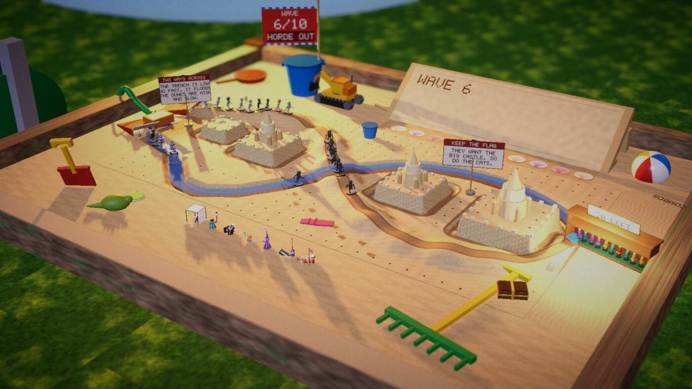
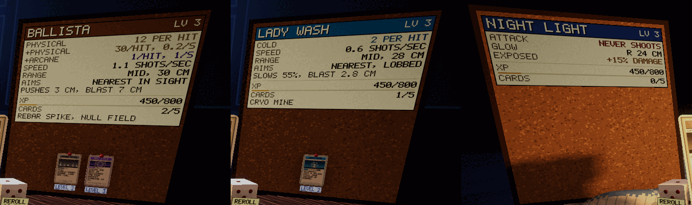
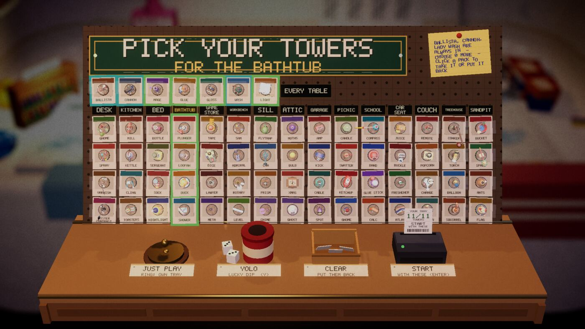

Devlog ·
A sandpit buried under its own sand, and a tower wall with ducks in front of the packs
Three pieces of work held back from earlier posts: a new table whose floor covered its own road, a corkboard that became a stat sheet, and a tower wall that looked wrong the first time the owner opened it.
Nothing new was merged since the last post, so this one goes back to three jobs that were held, each caught out by a screenshot.
The sandpit that buried itself
The sandpit (issue 433) is a back-garden sandpit on a hot afternoon, with two roads that cross once: a low, fast trench and a high, slow set of dunes. Its two unique things are a toy digger that cuts a shortcut and a hose that floods the trench. A cat sits at one corner.
The first import compiled on the first try, and the first screenshot already showed the castles and the bucket flag. It also showed that the lower half of the sand-writing screen sat inside its own sand bank. The worker then wrote that the pit's sand slab "covered the whole board, so the trench, the moats and the flood water were buried under it". The trench showed as a pale smear and the water only appeared at the crossing. The slab was rebuilt as four strips round the board. In the same round the cat turned out to be out of frame above the far edge, so it was scaled down and moved to the far corner. The worker called these "two things only looking found": no check had failed.

Balance was the long part. With the stock walking pace the bot lost at waves 4 to 6 on every setting, in two modes only: 20 lives, or dead. Slowing the horde on the sand to 0.6 to 0.68 of normal, with health growth at 0.2, gave wins with 5 to 14 lives in nine runs. Then each merge of the main branch moved the bot again, from losing at wave 5 to winning with all 20 lives and back. Health growth went 0.45, 0.2, 1.8 and finally 0.32.
On the final build all eight table-check runs failed one item, the frame time with 100 enemies, at 38 to 49 ms against a limit of 33.4, so the worker left the pull request open. The lead ran the same check on a lightly loaded machine and got 1.0 ms (95th percentile 1.7 ms), with every other item passing. The table was merged.
The four sandpit towers (issue 545: Bucket, Spade, Ant Nest, Sandcastle Flag) were filed next. Their worker merged them an hour later: all four pass the tower check, the bot clears waves 1 to 4 with them available, and forty of them placed cost 23 ms a frame against 21.5 with none.
A stat sheet on the corkboard
The step-down view already had a cork board. Issue 442 asked for it to become a stat sheet (damage types, amounts, speed, effects), to show the same sheet on hover, and to add a Step-down or Quick cards switch near the tray, pointed out at the third upgrade.
The worker built one shared renderer for all three. Its first attempt put the board in the dive camera's margin-scaled frame and the lens widened to 94 degrees, so the sheet got its own tight fit. Some screenshots flaked because the parked test window alternated between landscape and tall shapes, which changes the dive framing; pinning the shape fixed it.

The pull request was merged and the issue left open for the owner to judge.
The wall on the bathtub
On the owner's first launch of the tower wall, a screenshot from the bathtub showed rubber ducks and a red prop in front of the packs, a flat hover card and clipped labels. The task (issue 554) was to make the wall a place of its own on every table.
The worker's first run of the unchanged wall on the bathroom at 1920 by 1080 reproduced the screenshot. Its plan was to draw the rack, counter and objects on their own layer with a second camera, over a dimmed, heavily blurred table, so no prop could intersect them. Labels and the hover card moved onto the rack as printed things, because the on-screen text layer does not appear in the Linux screenshots at all and nobody could have checked it.
The first full run was clean. A sweep of 32 shots (16 tables at two window sizes) showed no props through the rack and no overlapping headings, except one fault: the receipt printer covered a row of packs, and moving the counter objects 4 cm forward fixed it.

What nobody has checked yet
- The sandpit: the frame-time item against the desk on the final build, Windows or web builds, sound, a full run, a human playing.
- The sandpit's towers: how they feel; the bot never buys them on its own.
- The stat sheet: not run in a browser, and a real Q keypress was not tried.
- The wall: Windows and web players, a real pointer click, table-lamp tint on the wall.